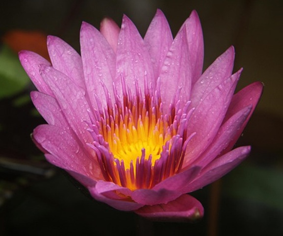
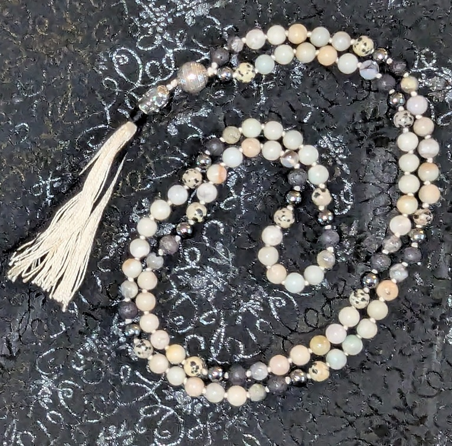

Megan's Yoga Website
Why Yoga?
I've been practicing and studying yoga on and off since around 2000, but in the past 10 years have become more serious about it. Initially I became interested in Yoga for the physical challenge - enjoying the focus on strength and flexibility. I also found Yoga's meditative aspect very healing and supportive during difficult times.
Hot Yoga
While living in Albuquerque I fell in love with hot yoga - specifically, hot Vinyasa. The intensity of constantly moving in a 100 degree room at 60% humidity sounded awful at first. However, at the end of an hour long class I was exhausted and calm. My body was relaxed and my brain was quiet. I volunteered at Hot Yoga Downtown in Albuquerque in exchange for free yoga classes. An unexpected bonus has been the long-lasting community connections I still have today.
More Hot Yoga Resources
Teacher Training
In 2018 I completed a 200 hour Yoga Teacher Training in Fort Collins at one of my favorite yoga studios, Yoga Pod Fort Collins. There, most of the classes are done in a heated room with high humidity. The styles I learned included Vinyasa and Hatha Yoga, with some very basic information about restorative and accessible styles. I have not ever, nor will I ever teach goat yoga, though I have attended a goat-yoga class.